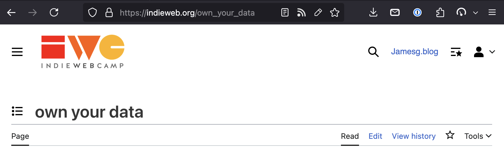

Edit Button
A browser extension that shows an edit icon when a page is editable.
How It Works
The Edit Button extension looks for rel=edit and MediaWiki edit links on a page, and text that suggests a page may be editable.
If an edit link is found on the page, you can click the Edit Button in your browser to go to the edit link.
You can also use the shortcut Cmd + Shift + E to trigger the Edit Button extension.
The Icons
The Edit Button will show one of three icons:
 The page has an edit link.
The page has an edit link.- No edit link was found, but you can view the page source.
- No edit or source link was found.
If you use the extension in Firefox, no icon will show up if an edit and source link was not found.
Configuration
After you install the Edit Button extension, there are several configuration options available.
To configure the extension, go to your browser's extensions page, find the Edit Button extension, then click the button to manage extension preferences.
You will see several configuration options:
- Overrides: Specify edit URLs for specific URLs, all URLs in a path, or a full domain.
- Settings: Several options that control the functionality of the extension.
- Approved and denied cross-origin edit links: See a list of sites with cross-origin edit links that you have approved or denied.
Overrides
Overrides let you specify a URL that you can use to edit a web page, pages in a path, or pages on a domain.
This feature is ideal if you want to use the Edit Button but a web page or site doesn't have an edit link.
Overrides will override any edit link on a page that matches an Override URL or URL pattern.
To set up an Override, you need to specify:
- A URL or URL pattern to match, and;
- The URL that can be used to edit any URL with the given pattern.
The URL pattern can be:
- A full URL, such as
https://example.com/page. - A path on a domain, such as
https://example.com/page/*, which matches any URL with that path. - A domain, such as
https://example.com/*, which matches any URL on that domain.
The /* is a wildcard that means any URL in the specified path will be routed to the specified edit URL.
Two parameters are passed to edit URLs when you click on the Edit Button on a page where your Override applies:
url: The URL of the page you clicked the Edit Button on.pageIsLikely404: The page has a title that indicates it may be a 404.
The pageIsLikely404 parameter is experimental.
Settings
The following settings are available:
- Use natural language heuristics?: When enabled, this URL will scan link anchors on a page to see if any contain words phrases like "Edit this page" that would indicate the page is editable. This feature is disabled by default because there may be false positives.
- Open edit links in a new tab?: By default, clicking the Edit Button will open the edit link in your current tab. You can open edit links in a new tab by enabling this setting.
- Look for "View Source" links?: When enabled, this feature will scan a page for "View Source" link anchors. If one is found and an edit link is not found, the Edit Button icon will update to a View Source icon. The anchor of the View Source link will be opened if you click the button.
Approved and denied cross-origin edit links
Every time you click the Edit Button, the extension checks to see whether the domain of the page you clicked the button while viewing is the same as the edit link found on the page.
If the domain of the site you are viewing and the domain of the edit link are different, you will be asked to Approve or Deny use of the edit link domain for the website you are viewing.
For example, suppose you are viewing example.com and there is an edit link that points to example.org. You will be asked to approve example.org as an editing origin for example.com.
A list of all approved and denied cross-origin edit links will appear in your extension preferences.
You can remove a domain from your Approved or Denied lists at any time.